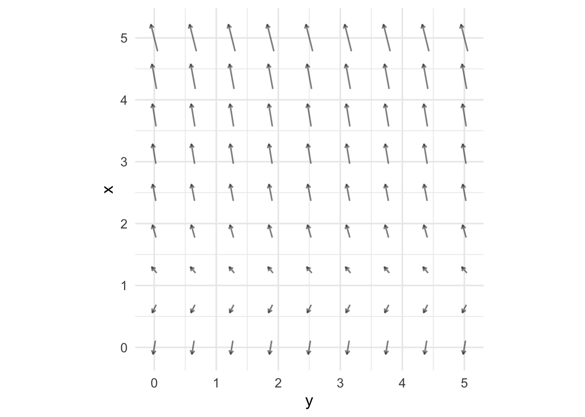
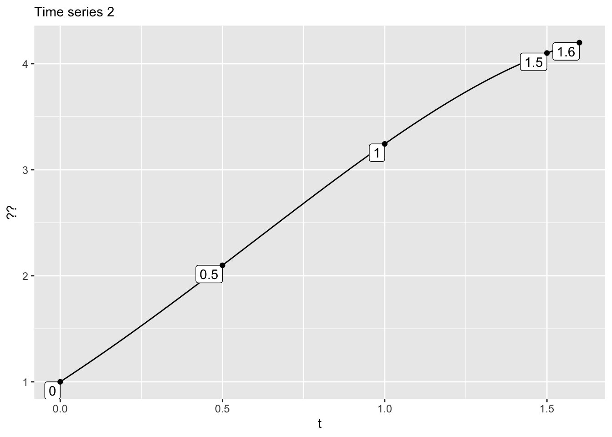
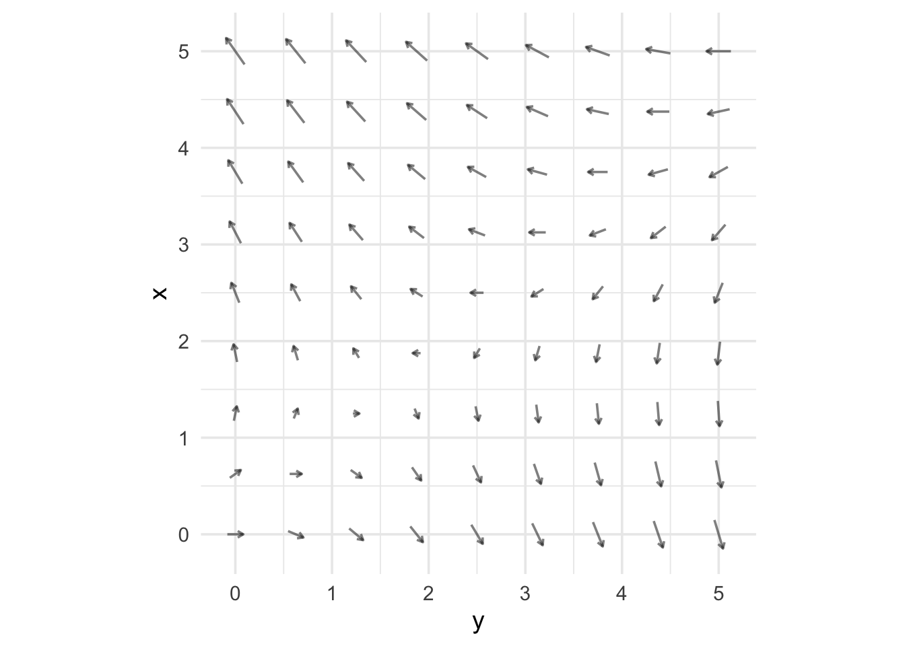

Placeholder for now
flow-bsc-1-83
Quantitative Argumentation
Chapter 13 Exercises
Note13.A
Exercise 1 
- Which of these best describes the change in the x-component of the state as it moves through this region of state space?
- Which of these best describes the change in the y-component of the state as it moves through this region of state space?
Exercise 2 Here are several quantities related to the function and economics of a solar power system.
For each of these system quantities, say whether the quantity is exogenous or endogenous. Keep in mind that the distinction is entirely about which quantities are connected to which. You will have to read through the whole list of system quantities to be able to say which are exogenous. Since you are not yet a solarphotaic engineer or financier, you’ll have to use your best judgement about which quantities are connected as inputs to any given quantity.
latitude (degrees) of the site
electricity price (USD/kWh) at which you can sell the power generated.
average cloudiness (%)
interest rate (%)
system cost (USD)
area (m2) of the solar panels
inclination (degrees) of the solar panels
instantaneous power maximum capacity (kW)
yearly energy production (MWh)
return on investment (%)
Perhaps there was one or more quantities that you weren’t sure was related to the others. Identify one and write briefly about which possible input quantities you were ambivalent about and whence stems your ambivalence. Or, pick one of the quantities and explain which other quantities you regarded as an input.
How many inputs must the function producing a quantity have in order to consider the quantity exogenous?
Exercise 3 
- Which starting point—green or blue—will bring the state to the other flow arrow?
- Following the flow through this small region of space, which of the following best describes the shape of the trajectory?
Exercise 4 Modeling of intravenous (IV) fluid administration.
As you likely know, an IV is a mechanism for adding fluid to a patient’s bloodstream at a desired flow rate. The real-world system is somewhat complicated, involving bags of fluid, tubing, clamps, and an ingenous device called a drip chamber. A nurse setting up an IV has to keep track of many things, including how to exclude air bubbles from entering the patient’s bloodstream, how to maintain aseptic standards, and such. If you are interested, this video is part of training materials for nurses, and shows how an IV is set up. There are many, many steps and several different techniques.
We are going to build a model of an IV system. Like all models, our model will have a purpose. In our case, the purpose is to calculate how to regulate the fluid flow at the proper rate.
A physician’s order to a nurse might be to infuse one liter of fluid over an eight-hour period. (Why eight hours? Likely because that’s when the next nursing shift will come in.) This quantity (1 L per 8 hours) is a flow rate stated as a rate of change: a change of 8 hours in time will lead to an additional one liter of fluid being administered. Regulating the flow means to set up the system to deliver the specified flow rate.
Physically, the system consists of a bag of fluid, to which is connecting a tubing set. The top of the tubing is a plastic spike that is inserted into a port of the bag. attached to the bag, the bottom end is a needle to be inserted into a vein. In between, there are two devices, a drip chamber and an adjustable clamp. Figure 1 shows a typical setup for the tubing; the bag and the patient are not shown.


The clamp is used to restrict flow through the tube. The resistance is set by a roller that can be moved by the nurse. The drip chamber is used to measure the flow rate through the tube. The chamber is more or less a transparent vial that, in use, is half-filled with air at the top and liquid at the bottom. There is a small nipple at the top; the fluid flows through in drops.
The package label shows conspicuously the number 10 in a blue box. That corresponds to a rate: 10 drops per mL. (The abbreviation for “drops” is gtts, so the rate is 10 gtts mL-1.) Different tubing sets can have different drop rates. For instance, pediatric tubing comes at 60 gtts mL-1.
The goal of the nurse is to set (using the clamp) the number of drops per minute to correspond to the prescribed flow rate.
Let’s see if we have enough information for the nurse to determine what is the right rate of drops per minute (that is, gtts min-1) that corresponds to the correct flow. Here are three quantities, of which the third is as yet unknown:
\[\overbrace{\underbrace{\frac{1}{8}\frac{\text{L}}{\text{hr}}}_\text{prescribed flow}}^\text{Rate A}\ \ \ \ \ \ \overbrace{\underbrace{10 \frac{\text{gtts}}{\text{mL}}}_\text{volume of a drop}}^\text{Rate B}\ \ \ \ \ \overbrace{\text{???} \frac{\text{gtts}}{\text{min}}}^\text{Target}\],
Our goal is to find out how to combine Rate A and Rate B by multiplication or division in order to get to the target. For instance, the answer might be A/B, or A \(\times\) B or B / A or 1/(A \(\times\) B).
The way to start is by writing down the dimension of Rates A and B. Keep in mind that the unit L refers to liters. The dimension L however, refers to length. [L] = [volume] = L3.
- What is the dimension of Rate A?
- What is the dimension of gtts, that is, [gtts]?
- What is the dimension of Rate B, that is, [gtts/mL]?
- What is the dimension of the target, that is, [gtts/min]?
We can multiply and divide dimensions in whatever way we like. For instance, (L T-2)-1 if T2 L-1.
- What’s the way to combine [Rate A] and [Rate B] to end up with [target]?
This dimensional analysis tells us how to combine the quantities Rate A and Rate B. Carry out the combination according to your answer to Question 5.
- What is the quantity of the combination:
Your answer to (6) is the target quantity, but it has some funny units:
1.25 L hr^{-1} gtts mL-1, or, re-arranging, `1.25 (L/mL) (gtts/hr)
We don’t want hours, we want minutes. One hour is 60 minutes. So re-arrange again:
1.25 {L/mL) (gtts/60min) To convert hours to minutes, multiply by 60 min hr-1. And isn’t L/mL a dimensionless quantity? Since one L is 1000 mL, L/ mL = 1000. So we get
1.25 gtts / (60 min) = 1250/60 = 20.8 gtts/min.
The nurse should adjust the roller on the clamp so that there are about 20 drops per minute, or 1 drop every 3 seconds.
Exercise 5

The y-component of the flow depends on the value of x.
The x-component of the flow depends strongly on the value of y.
The x-component of the flow depends strongly on the value of x.
The y-component of the flow depends on the value of y.
Exercise 6

For the flow shown above, red is a trajectory.
For the flow shown above, green is a trajectory.
For the flow shown above, red is a trajectory.
For the flow shown above, gray is a trajectory.

Time series 1 matches which component of which trajectory?
- gray-x
- gray-y
- red-x
- red-y
- green-x
- green-y
- blue-x
- blue-y

Time series 2 matches which component of which trajectory?
- gray-x
- gray-y
- red-x
- red-y
- green-x
- green-y
- blue-x
- blue-y
Exercise 7  1. Which of these best describes the change in the x-component of the state as it moves through this region of state space?
1. Which of these best describes the change in the x-component of the state as it moves through this region of state space?
- Which of these best describes the change in the y-component of the state as it moves through this region of state space?
Exercise 8

- The y-component of the flow depends strongly on the value of x.
Tip
Focus, for instance, on the column of flow arrows stacked up at y = 0. For different values of x in that column, the flow arrows have different y components.
- The x-component of the flow depends strongly on the value of y.
Tip
Focus, for instance, on the row of flow arrows where x = 0. Moving left to right along the y axis, the x-component of the flow goes from zero to strongly negative.
The x-component of the flow depends strongly on the value of x.
The y-component of the flow depends strongly on the value of y.
Exercise 9 One measure of the amount of transportation (for instance, delivered by a bus system) is person-miles (generally written “passenger-miles”).
Consider a simple instance of an intercity bus that takes on and drops off passengers in going from city A to B to C to D. The distance from A to B is 100 mi, from B to C is 50 mi, and from C to D is 200 mi.
The bus starts from city A, it is carrying 10 passengers. At city B, four passengers get off and 11 get on. At city C, 7 passengers get off and 14 get on. All passengers disembark at city D.
How how much transportation service has the bus provided?
Exercise 10 
- Which of these best describes the change in the x-component of the state as it moves through this region of state space?
- Which of these best describes the change in the y-component of the state as it moves through this region of state space?
- Notice that the previous questions didn’t offer choices like “decreasing slowly” or “increasing quickly.” That’s for a good reason. What is it?
Exercise 11 
- Following the flow through this small region of space, which of the following best describes the shape of the trajectory?
- Which of the following best describes the speed of movement through the state-space region?
Exercise 12
Which of these best describes how fast the state will move through this section of space?
Exercise 13 Consider this simple, made-up mortality table that might be representative of a bird species, e.g. robins.
| Age | Mortality | Starting Population |
|---|---|---|
| 0 | 1000 | |
| 1 | 0.50 | 500 |
| 2 | 0.50 | 250 |
| 3 | 1.00 | 125 |
| 4 | 0 |
Calculate the life expectancy for these birds. Give a number, but also explain you reasoning in words. (Hint: It’s not a long calculation.)
Exercise 14 The series of photographs below were taken by Eadweard Muybridge in 1878.

As described in the caption, the 11 images of the horse in motion are spaced by 0.04 secs, the vertical lines are spaced 27 horizontal inches apart, and the horizontal lines near the bottom are about 4 inches apart.
Find the horse’s horizontal position in each frame with respect to the vertical lines. Consider each of two points on the horse: the back of the saddle (which is just barely visible behind the rider) and the tip of the horse’s nose.
Calculate the horizontal velocity of each of the two points in (1) using the rate of change with respect to time between each pair of successive photos. Since there are 11 frames, you can calculate the velocity at ten successive “instants” in time. Give the velocity in units of miles per hour.
Looking at velocity versus time, at which point on the horse (saddle or nose) is the velocity most steady over the course of the stride.
You’ve got ten time points for velocity. Now calculate the rate of change of velocity with respect to time by considering the nine pairs of successive velocity values. (The rate of change of velocity is called the acceleration.)
Which point on the horse (saddle or nose) reaches the greatest positive acceleration over over the nine points of time in (4)?
Now calculate the position, velocity, and acceleration of one of the front hooves. How does the acceleration over time compare to that at the saddle or nose?
Exercise 15

For the flow shown above, red is a trajectory.
For the flow shown above, green is a trajectory.
For the flow shown above, blue is a trajectory.
For the flow shown above, gray is a trajectory.

Time series 1 matches which component of which trajectory?
- gray-x
- gray-y
- red-x
- red-y
- green-x
- green-y
- blue-x
- blue-y

Time series 2 matches which component of which trajectory?
- gray-x
- gray-y
- red-x
- red-y
- green-x
- green-y
- blue-x
- blue-y
Exercise 16 In Chapter 13 we referred to the state of a dynamical system. It would be more accurate to use the term “instantaneous state” for the purpose; the state at each particular instant of time. It’s intuitive to think about the instantaneous state as the system as you would see it in a photograph, frozen in time. The inventors of the mathematical methods behind the modeling of dynamical systems were Isaac Newton and Gottfried Willhelm Leibnitz in the decades around 1700. But photography was not invented until around 1850 so they could not draw on this intuition. They developed their methods using the tools of geometry and algebra.
Although it’s intuitive to think of the instantaneous state by analogy to a photograph, this analogy is critically flawed. To see why, consider the photo of a pendulum clock in Figure 2(a). It’s easy to see the position of the pendulum, but you can’t tell from the photo which way the pendulum is swinging. The instantaneous state of the pendulum involves both the position and velocity. The photograph doesn’t capture the velocity.
#| layout-ncol: 2 #| fig-cap: “Photographs of a pendulum clock. Source: (a) shutterstock.com#193799621; (b) stock.adobe.com/search?k=pendulum+clock” #| fig-subcap: #| - Still photo #| - Time exposure


Figure 2(b), a time exposure, gives a better sense of the velocity, but it would be very difficult to measure the velocity at any instant from the blurry view of the pendulum.
About 200 years after Newton and Leibniz, another technology was invented: the motion picture. This technology involves taking a sequence of still photographs separated by small intervals of time. Each of the photographs is called a frame. The frames are typically separated by 33 milliseconds.
You can measure the pendulum’s position from a single frame, but to find the velocity you need two frames. Measure the position in each of two successive frames. You calculate the velocity by taking the change in position between the frames and dividing by the change in time (e.g. 33 milliseconds). Picking up on the language in Section 4.4, velocity is the rate of change in position with respect to time.
Because a calculation is required to measure the rate of change, the mathematical methods came to be called calculus. Courses in calculus are usually presented in terms of algebra, which makes them inaccessible to many students. But the methods can also be represented arithmetically. We will emphasize the arithmetic approach.
?@sec-rates-of-change-brief introduced the notion of rate of change. The situation addressed by rates of change involves two quantities. One is the primary quantity, typically a quantity that is of particular interest to us. The other is the context-setting quantity. We take two snapshots of the system that relates these quantities. We’ll call these snapshots from and to.
If we label the primary quantity as \({\cal P}\) the two snapshots give us two values for \(\cal P\), which we’ll write as \({\cal P}_\text{from}\) and \({\cal P}_\text{to}\). The change in \(\cal P\) between the two snapshots is \[{\cal P}_\text{to} - {\cal P}_\text{from}\ .\]
The context-setting quantity—we’ll call it \(\cal C\)—similarly has a value in each of the snapshots. The change in \(\cal C\) is \[{\cal C}_\text{to} - {\cal C}_\text{from} .\]
The rate of change of \({\cal P}\) with respect to \({\cal C}\) is a conversion factor that tells us how to convert a change in \({\cal C}\) into the corresponding change in \({\cal P}\). But a rate of change is a different kind of beast than the conversion factors we examined in ?@sec-quantity-framework when looking how to change one unit into another unit—say feet to meters, or Euros to USD. Those ?@sec-quantity-framework were dimensionless because the to and from quantities always have the same dimensions and are “flavors of one.” But a rate of change is different: the primary and context setting quantities need not (and generally don’t) have the same dimension. A rate of change is a conversion between dimensions. We go from the dimension of the from quantity into the dimension of the to quantity.
For the sake of discussion, let’s image a system that uses several different factors to account for a person’s mood.
graph LR A(Day of year) A --> C[Sun's brightness] A --> D[Length of daylight] D --> J(Change in length of daylight) E[Work-related stress] F[Romantic situation] L[Family situation] G[Concern about global issues] K[Personal stress] H[Mood] D --> H C --> H E --> H G --> H J --> H F --> K L --> K A --> L K --> H H --> F classDef exogenous fill:#fff,stroke-width:1px class A exogenous class E exogenous class F exogenous class G exogenous
Note the four endogenous quantities: Day of year, romantic situation, work-related stress, global issues. None of these have any input arrows. Then there are the links between quantities. We won’t be concerned about most of these, and some are tongue-in-cheek such as the holiday-induced family stress.
Focus on the connections between sunlight and mood. The model has a direct link between brightness, which varies over the year, and mood. There’s also a link between length of daylight—winter short, summer long—and mood. And still another link of sunlight to mood: the change in the length of daylight. At the time of the Spring equinox (in March), the days are getting longer fast. At the time of the Autumnal equinox (In September) the days are getting shorter fast. (In mid-summer and mid-winter, day length changes only slowly.)
Suppose you are building a model for the purpose of studying SAD (Seasonal Affective Disorder), a form of depression associated with the changing seasons. Many SAD sufferers feel the onset of symptoms in the Fall and recover toward Spring.
IN BOTH FALL AND SPRING the sun’s brightness and the length of day are the same, yet SAD onset is associated with Fall, not Spring. WHATS GOING ON? It’s the DERIVATIVE of length of day that distinguishes FALL FROM SPRING.
SHOW GRAPHS OF BRIGHTNESS AND LENGTH OF DAY.
Exercise 17

- The y-component of the flow depends strongly on the value of x.
Tip
In fact, the flow arrows don’t vary at all with x.
- The x-component of the flow depends strongly on the value of y.
Tip
The x-component of flow is sometimes up and sometimes down. Which it is depends on the value of y.
The x-component of the flow depends strongly on the value of x.
The y-component of the flow depends strongly on the value of y.
Exercise 18 Referring to Figure 13.5, why is there no place where infectives are growing and susceptibles aren’t decreasing?
NoteChap 13 Key vocabulary
Only one of the following is a valid description of doubling time. Mark that one.
Only one of the following is a valid description of dynamical rule. Mark that one.
Only one of the following is a valid description of dynamical systems. Mark that one.
Only one of the following is a valid description of Euler framework. Mark that one.
Only one of the following is a valid description of exponential decay. Mark that one.
Only one of the following is a valid description of exponential growth. Mark that one.
Only one of the following is a valid description of state. Mark that one.
Only one of the following is a valid description of state space. Mark that one.
Only one of the following is a valid description of steady growth. Mark that one.
Only one of the following is a valid description of time series. Mark that one.
Only one of the following is a valid description of trajectory. Mark that one.
Only one of the following is a valid description of velocity. Mark that one.